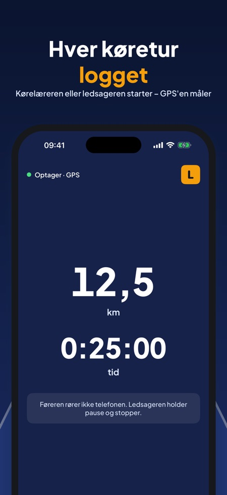
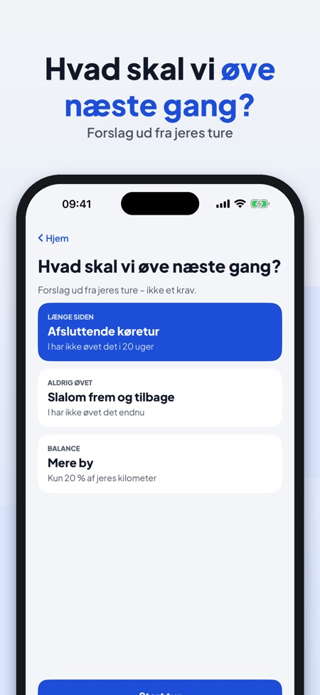
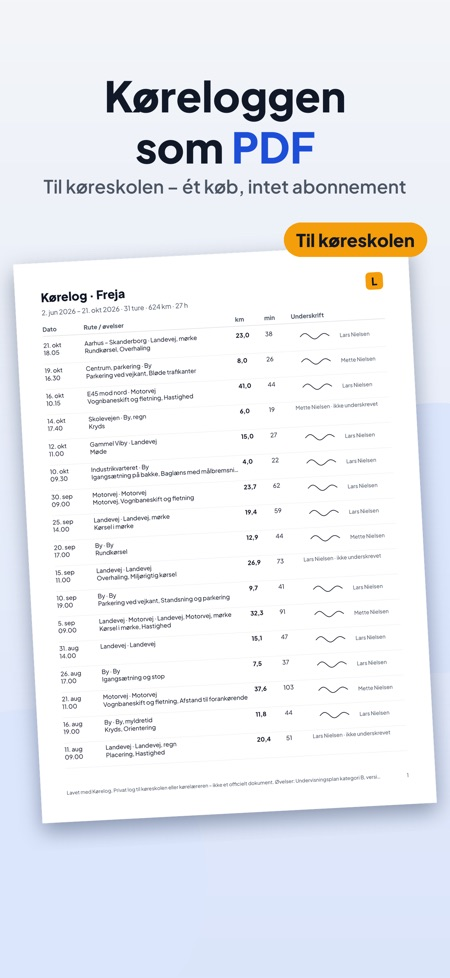

Ledsaget kørsel og køretimer. Mørkt klokken fire? Log kørsel i mørke og glat føre – og se, hvornår I sidst øvede det. Ledsageren eller kørelæreren starter, GPS'en måler.



Køreloggen til køretimer og ledsaget kørsel – i Danmark, Sverige og Finland. Ingen konto.
I Danmark øver du før køreprøven kun med en godkendt kørelærer: log køretimerne og øvelserne her. Efter prøven logger 17-årige turene med ledsager (kl. 20–05). I Sverige og Finland logger I den private øvelseskørsel med handledare eller opetuslupa-lærer.
Ledsageren eller kørelæreren starter optagelsen, iPhonens GPS måler afstand og tid. Efter turen vælger I vejtype, forhold og øvelser, og ledsageren skriver under på skærmen. Så ved I altid, hvor langt I er nået.
OPTAG HVER TUR
• Start, pause og stop – store knapper til ledsageren
• Afstand og tid med iPhonens GPS, rute for hver tur
• Tilføj en tur uden GPS bagefter
• Føreren rører ikke telefonen: skærmen under kørslen er kun til at læse
EFTER TUREN
• By, landevej, motorvej, mørke, regn, glat føre, myldretid
• Øvelserne, en note og ledsagerens underskrift
ØVELSER EFTER UNDERVISNINGSPLANEN
• Øvelsesliste for kategori B, grupperet: manøvrer, trafik, særlige forhold
• Hver øvelse: ikke øvet → øvet → sikker
• Listen følger landet: Danmark, Sverige eller Finland
SE HVOR LANGT I ER NÅET
• Kilometer, timer, antal ture og tid i mørke
• Et eget mål (der er ikke et lovkrav om antal km)
• Forslag til næste tur: øvelser, der er længe siden, og forhold I aldrig har kørt i
• 17-årsordningen: ture med ledsager kl. 20–05 tælles for sig
FØR KØREPRØVEN
• Dato og sted for prøven, nedtælling og tjekliste
• Plan for den sidste uge med de øvelser, der endnu ikke er sikre
• Påmindelser 14, 7 og 1 dag før prøven
• Links til myndighedernes sider
PERSONER OG PÅMINDELSER
• Elev og op til to ledsagere med gyldighedsdato
• Påmindelse 30 dage før en tilladelse udløber
PDF TIL KØRESKOLEN
• Hele køreloggen som PDF med dato, afstand, øvelser og underskrift
• Se PDF'en, også uden køb
Optagelse, ture, totaler, øvelseslisten, tjeklisten, én ledsager og de tre første underskrifter virker uden køb. Et engangskøb (Kørelog Full) låser op for PDF-eksport, to ledsagere med underskrift, forslag til næste tur, statistik for mørke, motorvej og by og planen før køreprøven. Intet abonnement, ingen reklamer.
Turene og placeringerne bliver på din iPhone. Placeringen bruges kun, mens en tur optages. Appen kan sende anonym brugsstatistik via Google Analytics for Firebase (fx hvilke skærme og knapper der bruges, køb i appen og omtrentligt land) – aldrig placering eller ruter. Det sendes kun, hvis du slår det til (ved start eller i Indstillinger).
Kørelog er en privat logbog, ikke et officielt dokument, og har ingen forbindelse til Færdselsstyrelsen, Transportstyrelsen eller Traficom. Brug ikke telefonen under kørslen.